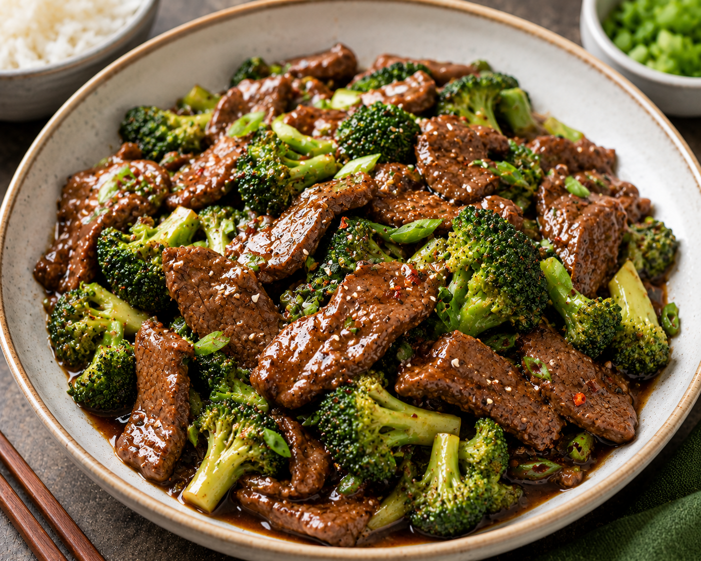

Beef & Broccoli Stir Fry

Ingredients
- 1 lb flank steak, thinly sliced against the grain
- 3 cups broccoli florets
- 3 cloves garlic, minced
- 1 tbsp fresh ginger, minced
- 1/3 cup low-sodium soy sauce
- 2 tbsp brown sugar
- 1 tbsp cornstarch, mixed with 2 tbsp water
- 2 tbsp vegetable oil
- 1 tsp sesame oil
- Steamed rice, for serving
Instructions
- Whisk together soy sauce, brown sugar, and the cornstarch slurry in a small bowl. Set aside.
- Heat 1 tbsp vegetable oil in a large skillet or wok over high heat. Add the beef in a single layer and sear for 1-2 minutes per side until browned. Remove and set aside.
- Add the remaining oil to the pan, then add broccoli. Stir-fry for 3-4 minutes until bright green and just tender.
- Add garlic and ginger, cooking for 30 seconds until fragrant.
- Return the beef to the pan and pour in the sauce. Toss everything together and cook for 1-2 minutes until the sauce thickens and coats the beef and broccoli.
- Drizzle with sesame oil and serve immediately over steamed rice.